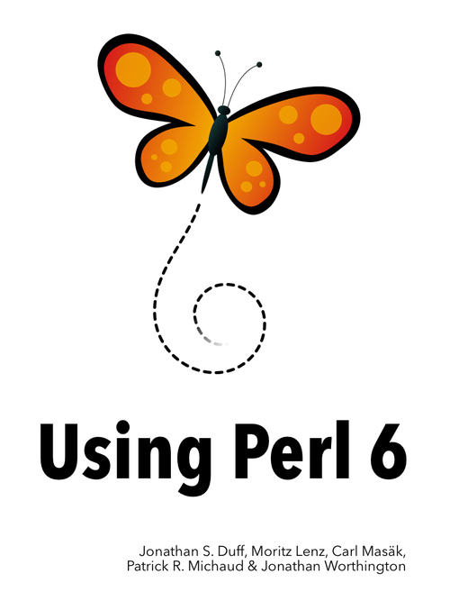
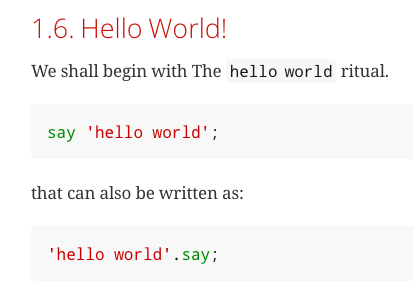

PERL
What is Perl?
Perl is a programming language originally developed by Larry Wall in 1987 to make report processing easier.
It's been called "the Swiss Army chainsaw of scripting languages" because of its flexibility and power, but also its ugliness.
It has also been referred to as the "duct tape that holds the Internet together", because of its use as a glue language and its inelegance.
